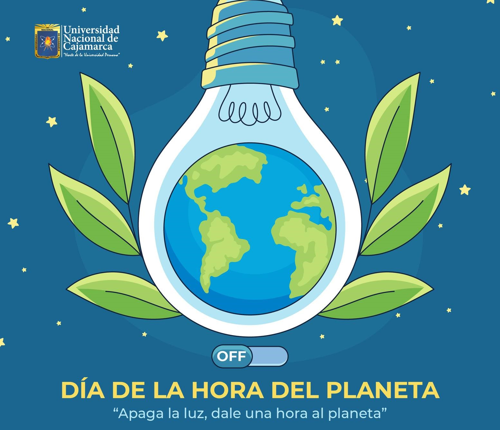

“El mundo no va a sobrevivir mucho más tiempo como un cautivo de la humanidad.” — Daniel Quinn.
Experiencia CAS · Marzo · Servicio
Cuestión global y problema local
La cuestión global es el cambio climático y el consumo responsable de energía. Las emisiones de gases de efecto invernadero están relacionadas con patrones de producción y consumo que ocurren a escala mundial. En el entorno escolar, el problema aparece cuando las personas perciben acciones como apagar luces o reducir desperdicios como gestos insignificantes y no reconocen el efecto acumulativo de los hábitos cotidianos.
Descripción de la experiencia
Participé como brigadista ambiental en el proyecto “La Hora del Planeta”. Preparé material de apoyo —un póster y una presentación— y organicé un discurso para explicar a alumnos de grados menores el propósito de la iniciativa e incentivar prácticas más sostenibles.
Evidencias

Reflexión personal (Etapas CAS)
Investigación
Revisé el problema del calentamiento global y pensé qué ideas eran más importantes para explicarlo de forma comprensible a estudiantes menores.
Preparación
Preparé el póster, la presentación y el discurso, intentando evitar que el mensaje fuera solo una lista de datos.
Acción
Expuse frente a un salón de menor grado y respondí a la reacción de los estudiantes mientras explicaba ejemplos cercanos a su vida diaria.
Demostración
Después comprendí que una charla aislada no garantiza un cambio de hábitos. Mi primera reacción fue sentir que “había generado conciencia”, pero esa afirmación era demasiado fácil de hacer sin evidencia. Lo que sí pude reconocer fue que logré comunicar un problema global y que yo mismo necesitaba ser coherente con el mensaje.
La experiencia me dejó dos aprendizajes concretos: mejorar mi oratoria para comunicar ideas complejas con claridad y pensar en mecanismos de seguimiento. Si repitiera la actividad, propondría una pequeña acción posterior —por ejemplo, registrar compromisos o hábitos durante una semana— para evaluar si la sensibilización produjo algún cambio observable.
Resultados de aprendizaje logrados
- RA 1: Identificar en uno mismo los puntos fuertes y las áreas en las que se necesita mejorar.
- RA 2: Mostrar que se han afrontado desafíos y se han desarrollado nuevas habilidades en el proceso.
- RA 3: Mostrar cómo iniciar y planificar una experiencia CAS.
- RA 4: Mostrar compromiso y perseverancia en las experiencias de CAS.
- RA 6: Mostrar compromiso con cuestiones de importancia global.